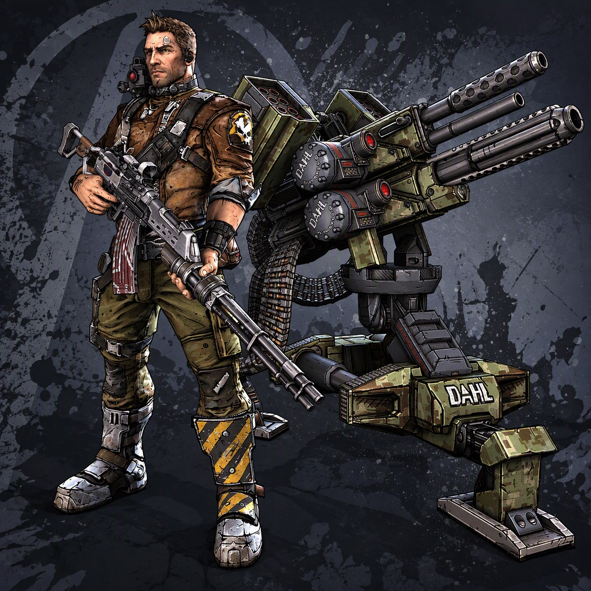
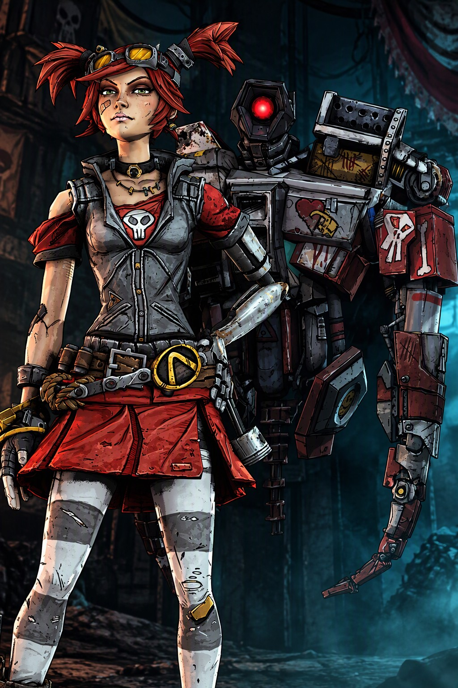
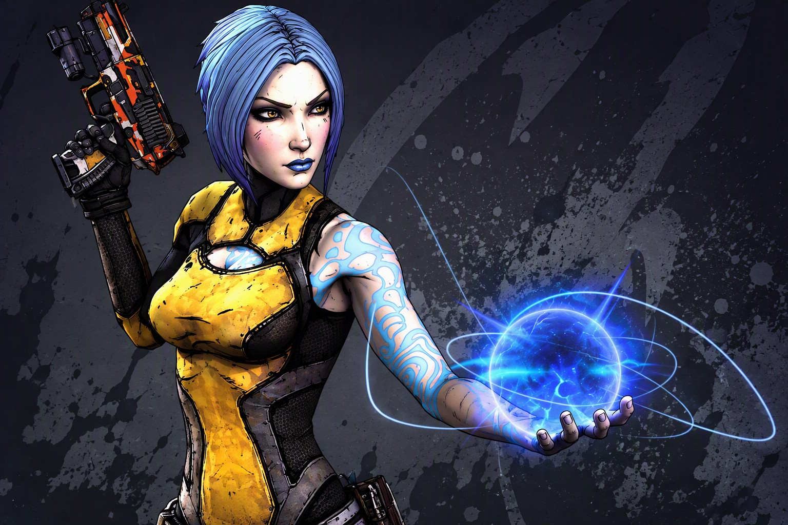
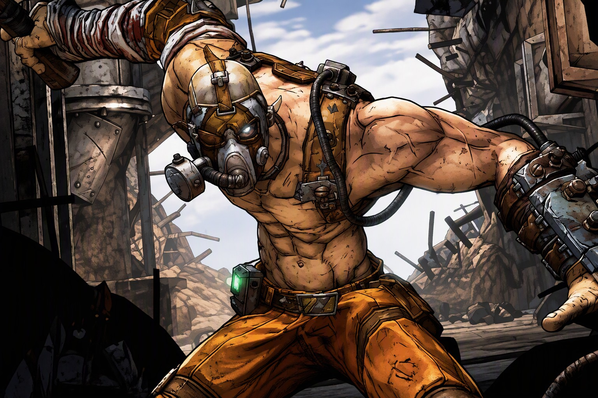
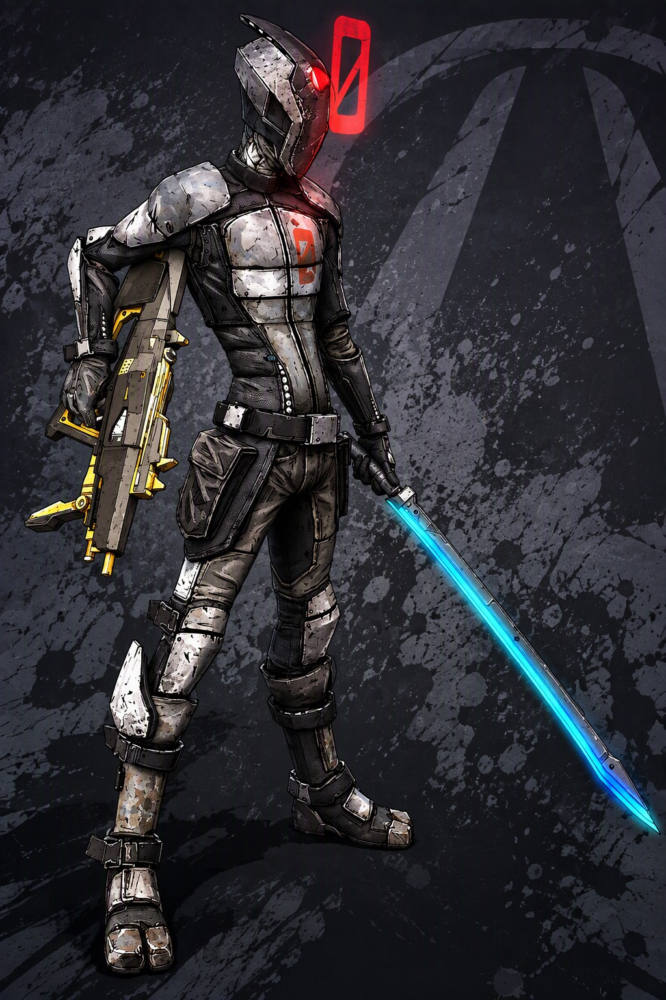
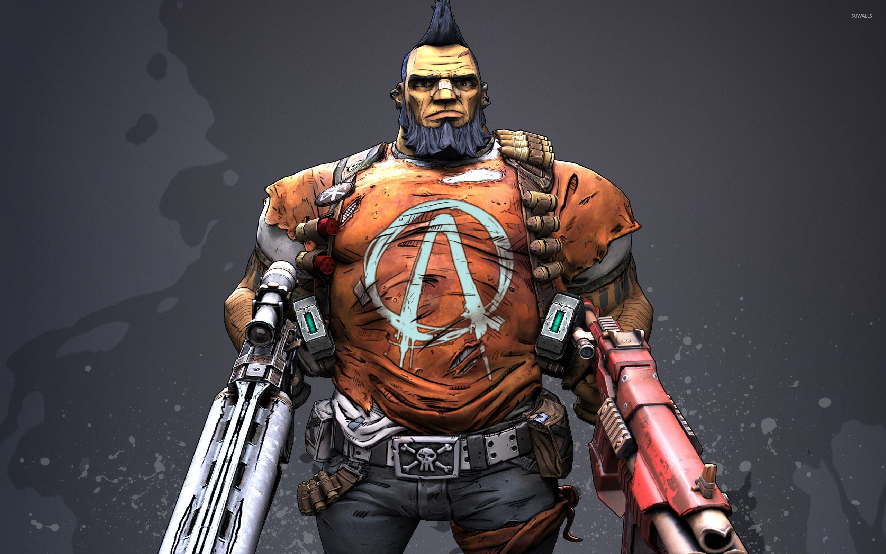

LES CHASSEURS DE L'ARCHE DE BORDERLANDS

AXTON
Le Commando, ancien soldat d'élite de la firme Dahl devenu mercenaire par amour de la gloire et de l'argent...
Sa compétence unique consiste à déployer une Tourelle Sabre automatisée qui bombarde les ennemis et attire leur attention. Très polyvalent et équilibré, il excelle dans le maniement des fusils d'assaut, l'utilisation des grenades et des dégâts explosifs, ainsi que dans le renforcement de ses boucliers.
C'est le personnage idéal pour les joueurs solo et les débutants grâce au soutien constant de sa tourelle.

GAIGE
La Mécromancienne, une jeune lycéenne de génie rebelle et passionnée de cybernétique introduite en tant que personnage DLC.
Sa compétence d'action unique consiste à invoquer Piégou (Deathtrap), un robot géant flottant qu'elle a conçu pour déchirer ses ennemis au corps à corps et détourner les tirs. Le gameplay de Gaige repose principalement sur sa mécanique unique d'Anarchie, qui augmente drastiquement ses dégâts à chaque ennemi tué ou chargeur vidé, au détriment total de sa précision.
C'est un personnage extrêmement dynamique, idéal pour foncer dans le tas et tirer partout sans viser.

MAYA
Une sirène dotées de puissants pouvoirs magiques et mystiques...
Sa compétence d'action unique est le Phaselock (Verrouillage de phase), qui lui permet de suspendre un ennemi dans les airs dans une bulle d'énergie pour l'immobiliser et le rendre vulnérable. Maya excelle dans le contrôle des foules, l'application des effets élémentaires (feu, corrosion, électricité et surtout le Slag) et le soin de ses alliés.
C'est le personnage de soutien par excellence en coopération, tout en étant redoutable et très fluide à jouer en solo.

KRIEG
Le Sadique, un colosse schizophrène échappé des laboratoires d'Hypérion, introduit en tant que deuxième personnage DLC.
Sa compétence d'action unique est la Carnage à la hache de scie (Buzz Axe Rampage), qui le propulse dans une fureur meurtrière augmentant sa vitesse de déplacement et lui permettant de massacrer ses ennemis au corps à corps ou de leur lancer sa hache. Krieg possède un style de jeu unique basé sur le principe du "high risk, high reward" : il devient plus puissant lorsqu'il subit des dégâts, qu'il est en feu ou qu'il frôle la mort.
C'est un personnage ultra-agressif, idéal pour les joueurs qui aiment foncer dans le tas et déclencher des explosions permanentes.

ZER0
Un mystérieux tueur à gages cyborg qui s'exprime exclusivement en haïkus et dont l'identité réelle reste inconnue.
Sa compétence d'action unique est Leurre (Decepti0n), qui lui permet de devenir invisible pendant quelques secondes tout en déployant un double holographique pour distraire les ennemis. Plus il reste invisible, plus son prochain coup est dévastateur. Zer0 est un personnage de type "high risk, high reward" (gros risques, grosses récompenses), excellent aussi bien pour abattre les cibles à très longue distance au fusil de précision que pour découper ses adversaires au corps à corps avec son sabre laser.

SALVADOR
Le Défourailleur, un colosse originaire de Pandore dopé aux stéroïdes et recherché pour une liste interminable de crimes locaux.
Sa compétence unique est la Défouraillage (Gunzerking), qui lui permet de manier deux armes simultanément de n'importe quel type (par exemple, deux lance-roquettes ou un fusil à pompe et un pistolet) tout en régénérant constamment ses munitions et sa santé. Salvador est considéré comme le personnage le plus puissant et destructeur du jeu (endgame), capable d'encaisser d'immenses dégâts tout en infligeant des niveaux de destruction absurdes.